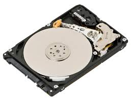
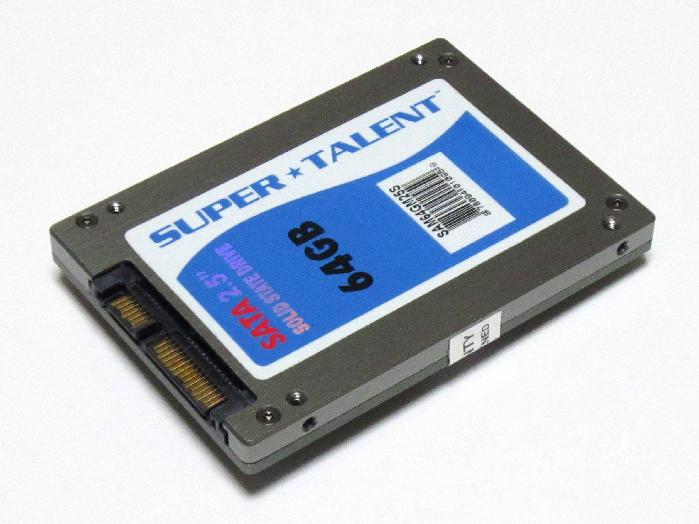

There are many different forms and types of this device. However, they all share a common goal. A storage device is a piece of computer hardware used for saving, carrying, and pulling out data. It can be internal like a hard disk drive or external like a flash drive. It comes in different shapes and sizes depending on the needs and functionalities.
The category falls under storage. The diagram below shows different types of computer storage, divided according to their distance from the central processing unit of a computer.
Now before we get into how the component works, we need to know the components of this hardware. The drives are double sided circular trays, often made of aluminium, covered by a magnetic layer which is where data is stored. These are placed around a rotary axis driven by a spindle motor. The purpose of the motor is essential to spin the disk really fast(5400-15000 rotations per minute). The read/write head is another component of the hard drive. They are steered by an actuator that is driven by a second motor. This allows them to sweep the entire surface of the drives. The role of the arm is to position the heads on the wanted path to have access to the information. Note that the read heads are never in direct contact as light friction or even a little dust can be enough to damage a drive. Furthermore, each hard drive has a microprocessor and an associative memory held on a printed circuit board(PCB). The signal processor is responsible for the conversion of electric signals to digital signals.
Now that we know what components are in a hard disk drive, how do they actually work? Hard disk drives store data using binary code(1s and 0s). The information is laid out on a magnetic layer of disk(s) and are read or written by the read heeads that are located above surface. How does it write you may ask? Well, it works like this. An electrical current travels through the heads and modifies the surface of the electric field by inscribing a 0 or a 1. Now vice versa, in reading mode the magnetic field transmits an electrical current to the read head. This is then translated into a digital signal that can be recognized and readable by the computer.
There are 2 main components of an SSD: the flash controller and NAND flash memory chips. The flash controller is responsible for the management of the data and communication with the computer or electronic device. The NAND flash memory chips are the ones responsible for actually storing the data. Unlike a hard disk drive, an SSD has no moving parts.
Solid State Drives uses semiconductor chips, instead of magnetic media, to store data. An SSD reads and writes data to a substrate of interconnected flash memory chips. These memory chips(NAND flash) store data by using a series of floating-gate transistors to store charge for an extended period of time. The oxide layer insulates the floating gate and traps the electrons, which control the switch-on voltage of the floating gate. If the electrons passing through go above a certain threshold, it has the value of 1. If it's below a certain threshold, it gets the value of 0. The chips used are non-volatile memory meaning their data stays safe even without power. SSD manufacturers design the devices with floating gate transistors to hold the electrical charge. This allows an SSD to keep data safe when it is not connected to a power source. SSDs will use 3 main types of memory: single, multi, or triple-level cells. Essential, single-level cells are the most expensive for they are the fastest and most durable. While multi and triple are both slower, they are cheaper than the single-level cells.
USB flash drives are handy tools when you need to back up documents, photos, or software. There are usually has 5 components to the usb flash drive. First, there's the standard-A USB plug. This plug is basically a physical interface to the host computer so that it can connect. The next component is the USB mass storage controller which is pretty much a microcontroller with a little bit of on-chip ROM and RAM. Next up is the NAND flash memory which stores data (more explanation in the SSD section from before). Furthermore, a crystal oscillator is used to produce the device's main 12 MHz clock signal and controls the device's data output. Lastly, the cover is used to protect the electronics from mechanical stress and is usually made of plastic or metal.

How do USB flash drives work? They use flash memory cips, which are inside flash drives. They are designed so that you can retain the data even when the power is off. (If you forgot how flash memory works, reread the SSD section). Don't get memory mixed up with RAM as it is commonly reffered to as. RAM only works when there is a power source. However, since flash memory isn't a form of RAM (it's more similar to ROM) it doesn't need power to store the data.